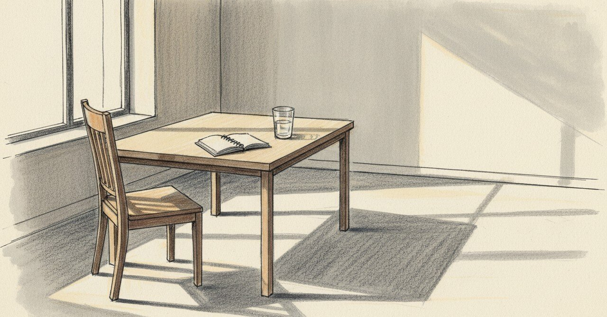

70万超えた福岡店の夜から、面接で「余白がないと歪む」と言うまで

2024年11月16日の夜、ノートに「福岡店で売上70万超えた！」と書いた。人数は少ないけど、それぞれのポテンシャルが発揮されていた夜だった。
今日の現場
2026年1月28日、ららぽーと福岡で、これまでパートで働いてくれた人の社員登用面接があった。
その人は責任感が強くて、詰め込んじゃって後で苦しくなるタイプだ。「これからももっとやらなきゃいけない」と自分に言い聞かせる性格。私はこう伝えた。「もう少し自分の中で余白を保って働いてくれたらいい」と。
「いつも責任感強くて詰め込んじゃって後で苦しくなるでしょ？」と聞いたとき、目がうるうるしていた。
店長にも別で伝えた。「あの人は頑張りすぎてしまう。お母さんが主体でやっている人だから、まずお母さんの役割を7割、社員としての役割を3割。そっちが先」と。
それぞれの背景を無視してみんなを同格に扱うことに警鐘を鳴らした。本人のためだけじゃなく、その人の頑張りすぎが、別の誰かへの圧力に変換されないためでもある。
「余白がないと歪むよ」とも伝えた。HSPの特性をそのまま渡しただけなんだけど。
あの頃と今
1年2ヶ月前のノートに戻る。
「今日は福岡店で売上70万超えた！人数少ないながらもそれぞれしっかり動いてくれていた。ランチもディナーもそれぞれがあまり無駄のない動きをしているように見えた。福岡店においては格段に接客レベルは向上しているように見える。それぞれ良いポテンシャルを発揮している」
「部下の存在がとても良い。それぞれを近い立場から鼓舞してくれているようだ。いろんなことに積極的に取り組む姿勢が有り難い。積極的に動いてくれるとこちらもより、成長させたいと感じる」
「熊本の売上が心配で仕方ない」
その夜の私は、チームに鼓舞されていた。誰かが鼓舞してくれることで全体が回る。70万という数字は、その人の存在の換算だった。
頭の中
あの頃、私は「鼓舞」を求めていた。鼓舞してくれる人がいたら回る、と思っていた。今は、余白を渡したい側にいる。
鼓舞されると、その瞬間は走れる。でも詰め込みすぎる人が走り続けると、家庭で歪みが出始める。社員登用された日の高揚で詰め込みすぎる方が、長期では危ない、と今は思っている。
別の見方もある。「余白を保って」と言いすぎると、本人が「もう少し頑張れたのに」と後悔するかもしれない。鼓舞のほうが本人の納得感が出る場合もある。私の判断は、その人の家庭の影が見えていなかったら、たぶん違っていた。
まだ途中のこと
70万売れた夜は、私が誰かに鼓舞された側にいた。今日の面接は、私が誰かに余白を渡す側にいた。同じ「成長」という言葉でも、入口と出口で意味が変わる。
熊本の売上を心配していた1年2ヶ月前の私に、今なら何と言うだろう。たぶん「余白がないと歪むよ」と言うんだろうな、と思う。
こうした記録を続けています。よければ、また読みに来てください。
#日記 #マネジメント #働き方 #個人開発 #AkariLab